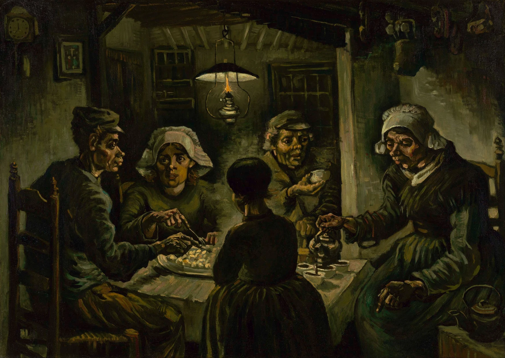

ゴッホは伝記より先に、筆の向き・隣り合う色・少し不自然な形を見る。まず一つだけ画面で確かめる。
ゴッホは、生涯そのものが強烈なので、作品を見る前から「耳を切った画家」「苦悩した天才」というイメージが先に立ちます。でも、美術館で使いやすいのは伝記よりも画面です。筆の跡がどちらへ動き、どの色が隣り合い、どこが現実より少し誇張されているのか。そこを見ると、ゴッホの絵はぐっと具体的になります。
1. ゴッホを見る3つの入口
空、木、地面、服。それぞれの筆触の方向を追う。
黄色と青、赤と緑など、隣り合う色が互いを強める場所を見る。
曲がった建物、大きな星、誇張された木。写実から外れた部分を見る。
この3つは、作品名や制作年を覚えていなくても使えます。ゴッホの作品を一枚見つけたら、まず「筆」「色」「形」のどれか一つに絞って見るのがおすすめです。
2. 暗い絵から、強い色の絵へ
ゴッホの作品を時代順に見ると、最初から《ひまわり》や《星月夜》のような鮮やかな画面だったわけではないことがわかります。オランダ時代の《ジャガイモを食べる人々》では、土のような茶や緑を中心に、室内の重い空気が描かれています。


パリで印象派や新印象派の作品に触れた後、画面は明るくなり、色を隣り合わせる効果も強くなっていきます。この「変化」を知っていると、美術館でゴッホを一枚だけ見るより、複数作品を比べる楽しみが増えます。
3. 筆の向きを追う
ゴッホの絵は、絵の具を何色使ったかだけでなく、筆をどちらへ動かしたかが見えやすいのが特徴です。空では横や渦、木では上へ伸びる線、地面では奥へ続く線。対象ごとに筆の方向を変えることで、画面全体に動きが生まれます。
近づける作品なら、一か所の筆跡だけを選んで目で追ってみます。「ここは右上へ」「ここはぐるっと回る」「ここだけ短い線が密集している」と、描かれた物より線の方向を見る。数歩離れると、その線が空や木、麦畑へ戻ります。
この近距離と遠距離の往復は、ゴッホを実物で見る大きな楽しみです。スマホでは一枚の画像に見えていても、実物では絵の具そのものの存在感が強く、画面が平らではないことに気づきます。
4. 色を隣同士で見る
黄色だけを「鮮やか」と見るより、黄色の隣に何色があるかを見る方がゴッホらしさをつかみやすくなります。深い青の隣に黄色を置くと、黄色も青も強く感じられます。
同じように、赤と緑、橙と青など、離れた性格の色が隣り合う場所を探します。ポイントは「この色が好き」で終わらず、隣に置かれた色が、どちらを強く見せているかを見ることです。
ゴッホの色は「現実に見えた色をそのまま塗った」と考えるより、画面の中で色同士を働かせていると見ると面白くなります。
5. 少し不自然な形を見る
建物が傾いて見える、木が必要以上に伸びる、星が大きい。そうした「現実と少し違う」部分は、単純に写実の失敗として片づけずに見たいところです。
どこを曲げ、どこを大きくし、どこを単純化したのか。写実から外れた部分を探すと、何を強く見せたかったのかを考える入口になります。目の前の風景をそのままコピーするのではなく、見たときの強さや感覚まで画面へ押し出しているように見える作品があります。
6. 《夜のカフェテラス》で試す
1888年の《夜のカフェテラス》では、まず黄色く光るテラスに目が行きます。夜景なのに「暗い」が第一印象にならず、人工の光が画面の中心として飛び込んできます。
次に、テラスの端や石畳の線を奥へ追います。建物と地面の斜め線が遠くへ集まり、視線が自然に画面奥へ運ばれます。そこで一度立ち止まり、最後に黄色い店と深い青の夜空を比べます。
| 01 | 黄色いテラス。夜景なのに「暗さ」より光が先に来る。 |
|---|---|
| 02 | テラスから石畳へ。線が視線を奥の通りへ運ぶ。 |
| 03 | 黄色と青。隣り合う二色が互いを強める。 |
ここまで見た後で、人の姿や星、窓の色など細部へ進むと、最初から全部を眺めるより画面の骨組みがわかりやすくなります。
7. 人生は、画面の変化と一緒に見る
ゴッホは1853年にオランダで生まれ、1890年に亡くなりました。作品数に比べると画家として本格的に活動した期間は長くありません。その短い期間の中でも、初期の暗い色調、パリでの明るい色、南仏での強い黄色や青、サン＝レミやオーヴェールでのうねる線など、画面は大きく変化します。
伝記を知ることはもちろん面白いのですが、作品を見るときは「この出来事があったからこの色」と単純に結びつけすぎない方がいいと思います。まず画面を見て、次にその時期の生活や場所を知る。その順番にすると、人生が作品の説明ではなく、比較するための背景になります。
ゴッホを一言で「情熱的」と覚えるより、暗い初期作と鮮やかな後年作を並べて、自分の目で変化を見つける。そちらの方が、美術館で作品に出会ったときに使える知識になります。
ゴッホは、筆の向きと色の隣を見る。
参考：Van Gogh Museum ／ Kröller-Müller Museum《Terrace of a Café at Night》